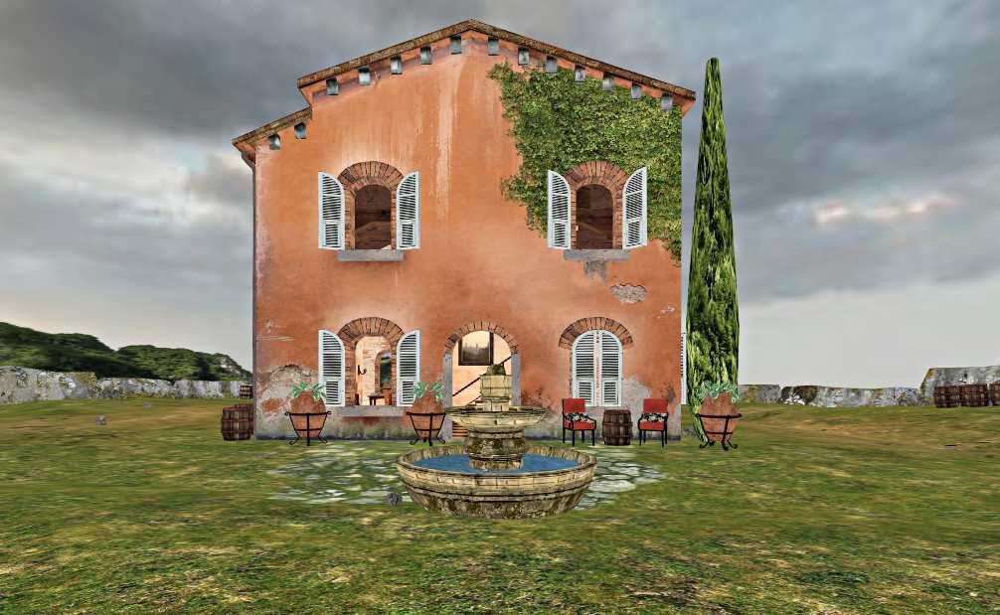

XML Extensions
The default krpano download package includes several xml-based extensions or helper-scripts for
various usage cases. The related xml files can be found in the plugins folder and optionally be
included when needed.
And because these are xml files, they can be easily customized.
controls3d.xml (view)

3D Examples
- Extend krpano with controls for 3D environments, e.g. for navigating in Depthmap‑Panos, 3D‑Models, Gaussian‑Splatting‑Models.
- This script replaces the previous depthmap_navigation.xml script.
- Features:
- Keyboard controls
- Mouse controls
- Touch Gestures
- Onscreen Joypad (e.g. for touch devices)
- VR controllers
- Collision detection
- First-person or Object-view modes
- Keyboard Keys:
- Arrow or WASD for forward, left, back, right moving.
- Holding SHIFT for faster movement.
- Space for jumping.
- Q for moving-up or for jumping.
- E, Y or Z for moving-down or for crouching.
- C for toggling between Collisions on/off.
- F for toggling between Walking and Flying.
- R for resetting the view, moving back to the startup view.
-
Mouse Buttons:
- Left - normal looking around or Object-rotating
- Middle or Left+CTRL or Right+ALT - move left, right, up, down.
- Right or Middle+ALT - moving forward, backward, left, right.
- Touch Gestures:
- 2-Finger panning for moving left, right, up, down.
- The 2-Finger modes starts after dragging a certain distance.
- Once in 2-Finger mode, the zooming-gesture will move forward, backward.
- Settings:
<controls showinfos="false" movemode="walking" wheelmode="zoom" dollydistance="0.5" joypad="true" levelcontrol="true" uizorder="99" speed="0.5" friction="0.9" collision="true" groundcollision="false" usevrfloorlevel="false" eyelevel="160.0" collisionlevel="100.0" smoothlevelchanges="0.15" stopdistance="30" moveback="1.2" bounceback="1.6" />- showinfos - show infos about the controls
- movemode - "walking" or "flying" or "off"
- wheelmode - "zoom" or "dolly zoom" or "distance" or "move"
- dollydistance - a distance factor for the wheelmode="dolly zoom" setting
- joypad - show or hide the joypad
- levelcontrol - show or hide the levelcontrol joypad
- uizorder - the layer zorder for the joypad and levelcontrol
- speed - movement speed
- friction - movement friction
- collision - collision-detection / stop on walls
- groundcollision - collision-detection with the ground, enables gravity, should be only used on fully-textured 3D-models
- usevrfloorlevel - use the real physical height in VR
- eyelevel - the distance in cm between the ground/floor and the eyes/camera
- collisionlevel - the height in cm where the collision checking should be done
- smoothlevelchanges - a factor for smoothing level/height changes
- stopdistance - keep this distance in cm to walls/surfaces
- moveback - when hitting a wall, move back x times
- bounceback - when hitting a wall, add a bounce movement
- Usage:
<include url="%VIEWER%/plugins/controls3d.xml" />
Change settings (statically):<controls groundcollision="true" usevrfloorlevel="true" />Change settings (dynamically):controls.groundcollision=true;
controls.usevrfloorlevel=true;
cursor3d.xml (view)
- Add a 3D navigation cursor.
- Shows a 3D-cursor at 3D-surfaces.
- For mouse, touch and VR usage.
- Optionally also use clicking or double-clicking for 3D-navigation.
- Settings:
<cursor3d enabled="true" shownormal="true" vrsupport="true" url="" size="20" scale="1.0" distancescale="0.0" color="0xFFFFFF" alpha="0.5" border="1 0xFFFFFF 1.0" normalcolor="0xFFFFFF" normalalpha="1.0" normallinewidth="3" normallength="20" onclick="" ondoubleclick="cursor3d_movetohit()" />- enabled - Show or hide the 3D-cursor.
- shownormal - Show the normal vector at the surface location.
- vrsupport - Enable/disable the VR support.
- url - Optionally use a custom image for the 3D-cursor.
- style - Optionally use a custom style for the 3D-cursor.
- size - Size of the 3D-cursor.
- scale - Scale factor for the 3D-cursor.
- distancescale - A special scale factor to compensate the distance-scale-effect.
- color, alpha, border - Appearance of the 3D-cursor.
- normalcolor, normalalpha, normallinewidth - Appearance of the normal vector.
- normallength - Length of the normal vector.
- onclick, ondoubleclick - Events
- Variables:
- cursor3d.hit - The raycast hit object (null if there is no surface).
- cursor3d.hs - The hotspot element for the cursor.
- cursor3d.hs_normal - The hotspot element for the normal vector.
- Actions:
- cursor3d_movetohit() - An action for automatically navigating to the hit-location. Can be used in the onclick or ondoubleclick events.
contextmenu.xml (view)
{kind=link}
- Add several typical entries for the right-click context-menu:
- For changing the pano control-mode (dragging or moving),
- and for setting several different viewing projections (e.g. Normal-View, Fisheye-View, Architectural-View, Little Planet and so on) with animated transitions.
- Usage:
<include url="%VIEWER%/plugins/contextmenu.xml" />
copy_to_clipboard.xml (view)
drag3d.xml (view)
- A simple action for dragging 3D-model hotspots in 3D-space along the current view/projection plane.
- Usage:
- Just call drag3d() in the hotspot ondown event.
- Non 3D-model hotspots need to have hittest=true set.
measure3d.xml (view)

Depthmap Examples
- A little helper tool and example for doing measurements in Depthmap-Panos / 3D-Models.
- Provides actions and an optional user-interface for starting interactive measurements.
- The design/look of the measurement points and lines can be changed either by editing the xml file itself or by redefining the <style> elements from it in the xml file that is including it.
- The available settings:
<measure3d ui="true" ui_pos="left,10,0" ui_dragable="true" gap="0.0" showslope="false" unit_format="roundval(v,1) + ' cm'" />- ui - show an optional user-interface for taking measurements.
- ui_pos- the aligment and position of the default user-interface.
Syntax: ui_pos="align,x,y" - ui_dragable - should the user-interface be dragable.
- gap - add a gap between the surface and the measure-point, could be used for rough surfaces.
- showslope - show the slope / angle of the vertical height distance (in degrees).
- unit_format - an expression to format the measuring result:
- cm: roundval(v,1) + ' cm'
- meters: roundval(v/100,2) + ' m'
- inch: roundval(v/2.54,1) + '[dq]'
- feet: roundval(v/30.48,2) + ' ft'
- The available actions:
- start_measuring_between_points()
Start measuring between two arbitrary 3D points, the user needs two double-click two times to select the two points. - start_measuring_between_surfaces()
Start measuring between two surfaces. The user needs to double-click once to select a point on a surface, the measurement then will be done between that point and a point on a surface that will be hit by a perpendicular line from the first surface. An easy way for measuring room sizes. - stop_measuring()
Stop the current measuring (could be also stopped by pressing the ESC-key).
- start_measuring_between_points()
- Usage:
<include url="%VIEWER%/plugins/measure3d.xml" />
fps.xml (view)
ios_iframe_fullscreen.xml (view)
- A helper script for getting into a kind of 'fullscreen mode' on iOS from inside an iframe.
- iOS itself doesn't support the HTML5 Fullscreen API on the iPhone and so there is no way to make the pano window larger than the iframe area itself.
- This script therefore adds a fake-fullscreen-mode support and redirects the browser window directly to the inner iframe page to make the iframe itself beeing the full browser page.
- This can be used in cases where the pano is embedded as 'smaller' iframe element into the website. When embedded as 'full-page-element' then this is not necessary.
- Note: this scripts only enables the fullscreen contextmenu item, custom xml elements that are depending on the 'device.fullscreensupport' state would need to get enabled manually. That's because the xml parsing and the xml element 'devices filtering' is happening before this script is running. For 'manual enabling' e.g. remove the 'fullscreensupport' devices check from the related elements in the xml files.
- Usage:
<include url="%VIEWER%/plugins/ios_iframe_fullscreen.xml" />
iphone_fullscreen_swipe.xml (view)
- A helper script for getting into fullscreen mode on the iPhone.
- iOS itself doesn't support the HTML5 Fullscreen API on the iPhone and so there is no way for directly going into fullscreen mode. But there is a 'hack': when rotating the iPhone to landscape, it's possible to 'scroll-out' the url/navigation-bar and so get into a kind of fullscreen mode.
- This xml script adds user-instructions for how to get into fullscreen mode.
- Here a video showing this in action: krpano iPhone Fullscreen Mode
- Usage:
<include url="%VIEWER%/plugins/iphone_fullscreen_swipe.xml" />
minimap_zoomrect.xml (view)
- A helper script for adding a zooming/panning-indicator for a mini-overview-map.
- A rectangle will be added within an image layer (with a small image of the pano-image) and the size and position of that rectangle will be automatically be updated depending on the zooming and panning.
- Additionally the rectangle will be dragable to pan around and the map-image will be clickable to pan to a certain position.
- Works the best with high-resolution/high-zoomable flat-panos, but can be also used on all other kind of panos.
- Usage:
<include url="%VIEWER%/plugins/minimap_zoomrect.xml" />
<layer name="minimap" url="map.jpg" bgborder="1 0xFFFFFF" align="lefttop" x="10" y="10" ... style="minimap_zoomrect" zoomrect_border="1 0x0000FF" zoomrect_dragable="true" zoomrect_movetoclick="true" zoomrect_dragdelay="0.95" zoomrect_showzoompercent="false" zoomrect_percentstyle="" />
stateurls.xml (view)
vr_and_anaglyph_buttons.xml (view)
wakelock.xml (view)
- Use the Wakelock API to prevent the screen from turning off, dimming or locking.
- Extensions:
- wakelocksupport - Check if the Wakelock API support is available.
- requestwakelock() - Request the Wakelock.
- releasewakelock() - Releases/stops the Wakelock.
- Usage:
<include url="%VIEWER%/plugins/wakelock.xml" />
<layer ... ondown="requestwakelock();" ...
webvr.xml (view)

WebVR Examples
- The webvr.xml is a helper tool that provides several interface elements for using VR.
- Buttons for entering and exiting the VR mode.
- A setup menu for interactively customizing the lens-distortion for mobile-phone-based Google-Cardboard-like VR headsets.
- Lens distortion presets for common headsets.
- An animated VR 'pointing-cursor' for devices without controllers (point/stare on an element for some seconds to interact with it).
- Mulitple VR controllers styles for real VR controllers (laser, line+hitpoint, handcursor+hitpoint).
- Support for a 'fake/simulation VR mode' for testing the VR mode also on non-VR systems.
- Includes an editable built-in list of mobile-phones and their screensizes to get the correct lens-distortion.
- Provides a link to send the current tour to Meta Quest VR headsets.
- Provides instructions for how to enable the WebXR API on the Apple Vision Pro headset.
- Usage:
<include url="%VIEWER%/plugins/webvr.xml" /> <-- optionally adjust some of the webvr.js default settings: --> <plugin name="webvr" mobilevr_support="true" mobilevr_fake_support="true" mobilevr_wakelock="true" ... />
webvr2.xml (view)
- At the moment, the webvr2.xml is basically the same as the webvr.xml, but uses some 'reactive programming' functions and these require using a krpano 1.22 license.
- The old webvr.xml is therefore here for backward compatibility and to allow updating old projects to the latest krpano version without the need for a license upgrade.
- This also allows webvr2.xml to get updates in the future that wouldn't be possible without a new license.
webvr_autozoom.xml (view)
- A helper script for zooming in VR.
- After ~2 seconds staring at one point, the view slowly starts zooming-in.
- When looking around, the zooming-in stops and the view starts slowly zooming-out back to the normal view (the faster the looking-around the faster the zooming-out).
- Usage:
<include url="%VIEWER%/plugins/webvr.xml" /> <include url="%VIEWER%/plugins/webvr_autozoom.xml" />